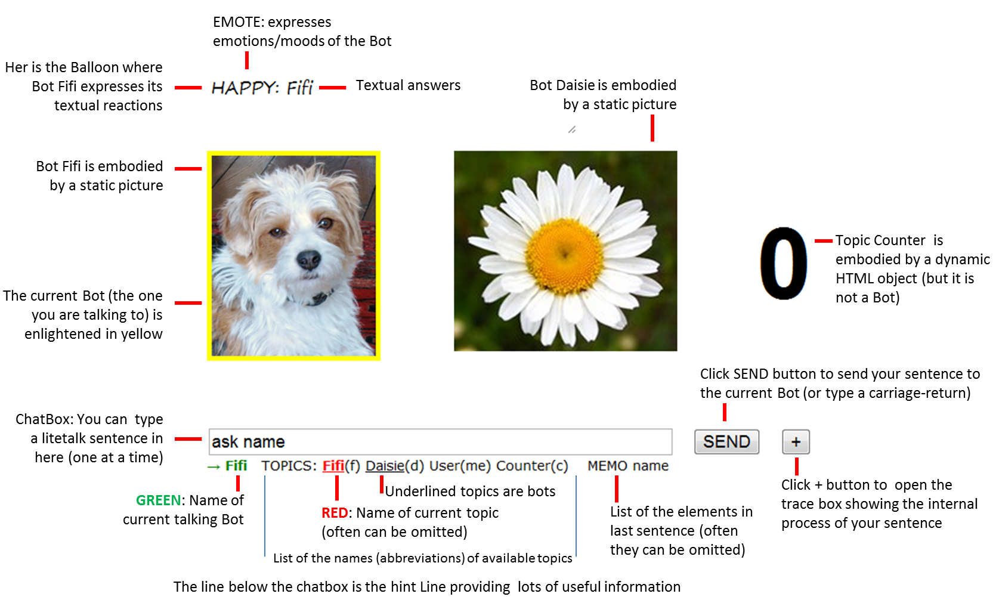

GOTO litetalk home page
In this page, litetalk is introduced in an informal manner, mainly through commented examples of litetalk sentences, placed in the context of the Fifi and Daisie web page.
For a formal definition of the litetalk language see the complete litetalk reference page.
Knowing three basic facts about litetalk can help:
 |
The best way to learn about litetalk is to chat with litetalk agents. This picture is a screen shot of the Fifi and Daisie web page which contains two litetalk agents: Fifi the dog and Daisie the flower. It contains also four topics: one associated with Fifi; one associated with Daisie; one associated with you (the user); finally one associated with a Counter, which is a dynamic HTML object (displayed on screen by the integer on right). You can try examples of litetalk sentences described below, in the Fifi & Daisie Web page. |
In the following, technical notions of litetalk are typed in purple format when they are first introduced.
The purple format is also used when displaying inline examples of litetalk sentences.
When you interact with litetalk agents, you type a single elementary utterance, further called a sentence into the chatbox. Then you just have to click the SEND button or alternatively to stroke the RETURN key and wait for the agent's reaction. Litetalk has basic typing conventions, most of them being inherited from traditional chatbot systems:
Litetalk sentences can be simple or more complex, but they all share a basic inner structure which is inspired from the command metaphor: a typical litetalk sentence can be viewed as a command sent to the agent with zero, one or more parameters:
SYNTAX: COMMAND PARAM PARAM ..
EXAMPLE: ask agent age
EXAMPLE: bye
The command must be at the beginning of the sentence
The
parameters can be given in no particular order: ask agent age = ask age agent
Litetalk propose also variants that enable the user to type more natural sentences or on the contrary more formal sentences:
Here is the table describing the 26 commands of litetalk:
| CODE | COMMAND | PARAMETERS |
DESCRIPTION |
BOT REACTION |
| KNOWLEDGE | ||||
| a | ask | T A | User asks Bot the value of T.A | R value of T.A |
| v | verify | T A V | User asks Bot if value of T.A equals V | R Yes/No |
| t | tell | T A V | User states to Bot that value of attribute A of Topic T equals V | U updates T.A with V |
| r | reply | V | R | User replies to a question of Bot by providing a value or a reference | R thanks |
| k | know | R | User asks Bot if R refers to an entity known by Bot | R Yes/No |
| w | why | _ | T A V | User asks Bot the reason of the last Bot's reaction | *why T.A equals V | R reason description |
| p | possible | F | User asks Bot if F can be executed (availability, rights etc.) | R Yes/No |
| h | how | O | User asks Bot how User can achieve operation O, in terms of Fi | R procedure description |
| e | effect | F | User asks Bot the effect of executiong function F | R effect description |
| ACTIONS | ||||
| x | execute | T F | T F X1 X2 .. | User requests Bot to execute function T.F(Xi) Xi can be empty | X T.F(Xi) and R done |
| m | more | _ | User requests Bot to repeat last x command | X last T.F(Xi) |
| u | undo | _ | User requests Bot to undo last x command | X reverse(last( T.F(Xi))) |
| OPINIONS | ||||
| j | judge | R J | User states to Bot that User thinks that R is J | U updates User's topic with R J |
| f | feel | J | User states to Bot that User feels J | U updates User's topic.feelings with J |
| l | like | R | User states to Bot that User likes entity referred by R | U updates User's topic.likes with R |
| d | dislike | R | User states to Bot that User dislikes entity referred by R | U updates User's topic.dislikes with R |
| b | bravo | _ | R | User congratualates Bot (about R) | U Bot's topic moods and R thanks |
| c | critisize | _ | R | User critisizes Bot (about R) | U Bot's topic moods and R sorry |
| s | suggest | T F | T F x1 X2 .. | User suggests/advises Bot to execute T.F(Xi) | R thanks and X T.F(Xi) or not |
| o | object | T F | T F x1 X2 .. | User suggests/advises Bot to execute T.F(Xi) | R thanks and X T.F(Xi) or not |
| i | intent | T F | User states to Bot that User intents to execute T.F in near future | U updates User's topic.intents with T.F |
| DIALOG SESSION | ||||
| y | yes | _ | User replies yes to a previous question from Bot | U updates and handles answer from User |
| n | no | _ | User replies yes to a previous question from Bot | U updates and handles answer from User |
| g | greet | B | User begins a new session with Bot B | R hello (and swicth bots if needed) |
| q | quit | _ | User quits the application | R bye and shuts application |
| z | extra | expression | *used for future extensions of litetak language | - |
ABRIDGEMENT: Each command can be abridged by a single character [a-z] corresponding to the first letter of the command (except x for execute)
when abridged the code of the command must begin the sentence.
Example: "bla bla bla ask Daisie name" can be typed "a daisie name"
ALTERNATIVES: Conversely each command name can have alternative expressions: simple symbols or phrases.
See
complete litetalk reference page for the list of comand alternatives
Examples:
1. command "ask" can also be phrased : "what is", "what are", "tell me", "say"..
"ask
daisie name" can be typed "What is Daisie name?"
2. command "execute" can be phrased: "do","perform"..
"execute stop counter"
can be typed "do stop counter"
COMMAND "execute"
The code for command execute is x not e
command execute can be ommited
Example " x stop counter" can be typed "stop counter" even "stop" if the current topic is Counter
ABRIDGEMENT: One can abridge topic names, as showed between () in the hint line under the chatbox
Example : while speaking to Fifi, "ask daisie name" can be typed "a d name"
OMISSION: One can also omit the name of the current topic (the one in red in the hint line)
Example: while speaking to Fifi, "ask counter value" can be typed "ask value" if Counter is the current topic
PRONOUNS: One can refer to the current bot topic with pronoun "you" or "your" or abridged "y" and to the User topic (you) with pronoun "me" or "my"
Examples:
"ask fifi name" can be typed "ask y name" or "a y name"
"tell user age is 30" can be typed "tell my age is 30" or "t me age is 30"
They cannot be abridged
They can have alternatives.
See
complete litetalk reference page for the list of alternatives
A Web page can contain a single litetalk agent or several litetalk agents. When there are several agents (like in the case of Fifi and Daisie) you may want to talk to a particular agent then talk to another etc. Each time you want to switch conversation, you have to indicate which agent you want to interact by using the so-called greet command:
COMMAND: greet
SHORTCUT: g
ALTERNATIVES: hello — hi — ..
PARAMETERS: name of the addressed agent
EXAMPLES: Hello Fifi — Hi daisie — greet Fifi — g fifi — ..
You can close a conversational session with the bye command
COMMAND: bye
SHORTCUT: b
ALTERNATIVES: bye bye — see you — ..
PARAMETERS: none
EXAMPLES: Bye Bye! — ..
COMMAND: ask
SHORTCUT: a
ALTERNATIVES: what is — give me — I would like to know — ..
PARAMETERS: name of the topic and name of the key
EXAMPLES: ask fifi age — a pal — ..
A litetalk agent is provided by its designer with a set of so-called topics that encompass, in a single named entity, a particular subject of conversation. Each agent has its own topic so it can talk about itself. Topics are composed of a set of so-called definitions that contain information about the topic: an attribute, a property, an element, other related topics etc.
EXAMPLE:
Fifi is the name of an agent and it is also the reference of its topic;
age is the key of a definition containing the actual value of the age of FiFi (say it is 4)
ask is a command that will prompt the agent to retrieve this information from its topic and to return the actual value in its answer
You can type:ask fifi age COMMAND TOPIC KEY
ask dog age COMMAND TOPIC KEY // topic fifi can also be referred to by its type (dog)
ask age of fifi COMMAND KEY OF TOPIC
ask the age of fifi COMMAND KEY TOPIC // most gramatical words are discarded (the)
ask your age COMMAND THE-CURRENT-TOPIC KEY
ask age COMMAND THE-CURRENT-TOPIC KEY
ask COMMAND THE-CURRENT-TOPIC THE-LAST-TYPED-KEY
When some parameters are given
implicitly (your) or not given they are inferred by the agent, generally on the basis of the context defined by previous sentences.
For example, you can greet an agent, then forget its topic name in further sentences:
SENTENCE —› ANSWER:
g fifi —› Fifi speaking // now on, THE-CURRENT-TOPIC = fifi
a age —› 4
a pal —› They are: Daisie; Toto; // pal = pals
...
An agent can know several topics. For example, Fifi knows all about agent Daisie (they are pals) and also all about a tool "Counter". Hence we can ask with some success:
g fifi —› Fifi speaking
a pal —›They are: Daisie; Toto;
a gender of daisie —› female
a tool —› Counter // here THE-CURRENT-TOPIC is still fifi
a counter value—›It si 12
COMMAND: tell
SHORTCUT: t
ALTERNATIVES: I think that — ..
PARAMETERS: TOPIC KEY IS VALUE // where IS is a separator introducing a value
EXAMPLES: tell my name is Paul
Litetalk agents can modify the definitions of a topic they know, with three basic operations:
COMMAND: execute
SHORTCUT: x
ALTERNATIVES: do — perform — ..
PARAMETERS: name of the action and arguments of the action (name of a topic or a value etc.)
EXAMPLES: execute increase counter — x reset counter — ..
Litetalk agents can perform two kinds of actions when asked by using the execute command. Some definitions of topics they know, called actions, can be about operations upon the structure of the Web page. they can be triggered by the agent.
Litetalk agent can sometimes undo the last executed action:
COMMAND: undo
SHORTCUT: u
ALTERNATIVES: none
PARAMETERS: none
EXAMPLES: undo — u
See complete litetalk reference page for other commands
Last updated February, 02, 2012.